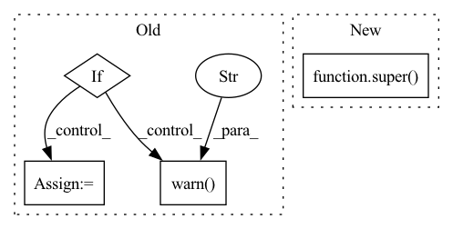

Pattern ID :33204
Before Change
class autocast(object):
def __init__(self, enabled=True, dtype=torch.bfloat16):
supported_dtype = [torch.bfloat16]
if dtype not in supported_dtype :
warnings.warn("In CPU autocast, but the target dtype is not supported. Disable the autocast.")
warnings.warn("CPU Autocast only support dtype of torch.bfloat16 currently." )
enabled = False
dtype = torch.bfloat16
self._enabled = enabled
self._dtype = dtype
After Change
``torch.cpu.amp.autocast(args...)`` is equivalent to ``torch.autocast("cpu", args...)``
def __init__(self, enabled=True, fast_dtype=torch.float16):
super() .__init__("cpu", enabled=enabled, fast_dtype=fast_dtype)
In pattern: SUPERPATTERN
Frequency: 3
Non-data size: 4
Instances Fragment ID: 95893959
Project Name: pytorch/pytorch
Commit Name: 324673a537fc818527b8375700a9b95a83a00c92
Time: 2021-08-10
Author: puririshi98@berkeley.edu
File Name: torch/cpu/amp/autocast_mode.py
M Class Name: autocast
N Class Name: autocast
M Method Name: __init__(3)
N Method Name: __init__(3)
M Parent Class: torch.autocast_mode.autocast
N Parent Class: object
M File Name: torch/cpu/amp/autocast_mode.py
N File Name: torch/cpu/amp/autocast_mode.py
M Start Line: 7
M End Line: 14
N Start Line: 9
N End Line: 9
Before Change
enabled(bool, optional, default=True): Whether autocasting should be enabled in the region.
def __init__(self, enabled=True):
if enabled and amp_definitely_not_available():
warnings.warn("torch.cuda.amp.autocast only affects CUDA ops, but CUDA is not available. Disabling." )
self._enabled = False
else:
self._enabled = enabled
After Change
``torch.cuda.amp.autocast(args...)`` is equivalent to ``torch.autocast("cuda", args...)``
def __init__(self, enabled=True, fast_dtype=torch.float16):
super() .__init__("cuda", enabled=enabled, fast_dtype=fast_dtype)
// Casts Tensors and containers of Tensors. Special-cases passthroughs for strings and np.ndarrays, which Fragment ID: 95893965
Project Name: pytorch/pytorch
Commit Name: 324673a537fc818527b8375700a9b95a83a00c92
Time: 2021-08-10
Author: puririshi98@berkeley.edu
File Name: torch/cuda/amp/autocast_mode.py
M Class Name: autocast
N Class Name: autocast
M Method Name: __init__(3)
N Method Name: __init__(2)
M Parent Class: torch.autocast_mode.autocast
N Parent Class: object
M File Name: torch/cuda/amp/autocast_mode.py
N File Name: torch/cuda/amp/autocast_mode.py
M Start Line: 119
M End Line: 125
N Start Line: 16
N End Line: 17
Before Change
if clean_up_tokenization_spaces is not None:
postprocess_params["clean_up_tokenization_spaces"] = clean_up_tokenization_spaces
if stop_sequence is not None:
stop_sequence_ids = self.tokenizer.encode(stop_sequence, add_special_tokens=False)
if len(stop_sequence_ids) > 1:
warnings.warn(
"Stopping on a multiple token sequence is not yet supported on transformers. The first token of"
" the stop sequence will be used as the stop sequence string in the interim."
)
generate_kwargs["eos_token_id"] = stop_sequence_ids[0]
return preprocess_params, forward_params, postprocess_params
After Change
max_input_length=None,
**generate_kwargs,
):
preprocess_params, forward_params, postprocess_params = super() ._sanitize_parameters(
return_tensors,
return_text,
return_type, Fragment ID: 95893961
Project Name: huggingface/optimum-graphcore
Commit Name: 664159a88f3b26ebb5a6f76bd8343285f1693c67
Time: 2023-03-22
Author: 19981378+HMellor@users.noreply.github.com
File Name: optimum/graphcore/pipelines/text2text_generation.py
M Class Name: IPUText2TextGenerationPipeline
N Class Name: IPUText2TextGenerationPipeline
M Method Name: _sanitize_parameters(8)
N Method Name: _sanitize_parameters(8)
M Parent Class: Text2TextGenerationPipeline
N Parent Class: Text2TextGenerationPipeline
M File Name: optimum/graphcore/pipelines/text2text_generation.py
N File Name: optimum/graphcore/pipelines/text2text_generation.py
M Start Line: 19
M End Line: 46
N Start Line: 19
N End Line: 27